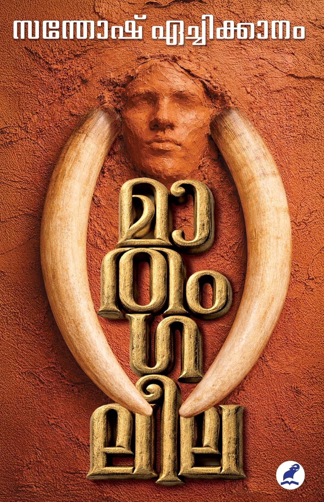
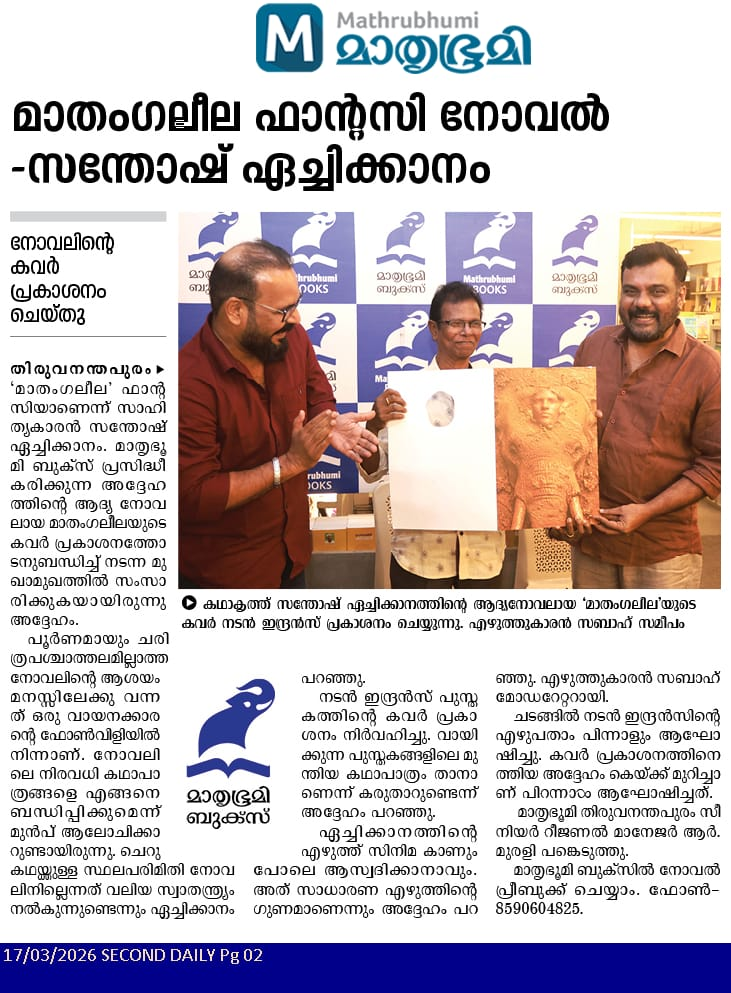

Author: സന്തോഷ് ഏച്ചിക്കാനം
Review by: സിന്ധു ഉല്ലാസ്
സന്തോഷ് ഏച്ചിക്കാനത്തിന്റെ ബിരിയാണി എന്ന കഥ വായിച്ചാണ് പരിചയം. പിന്നീട് പല കഥകളും മിലൂപ്പാ, കൊമാല, മിസാറു... തുടങ്ങിയ പുസ്തകങ്ങൾ വായിച്ചു.
ഇപ്പോളിതാ ആദ്യ നോവലായ മാതംഗലീലയിൽ എത്തി നിൽക്കുന്നു. വല്ലാത്തൊരു അനുഭവമായിരുന്നു.
കഥകളിലെ പോലെ തന്നെ മൂർച്ചയുള്ള ഭാഷയും സംഭവങ്ങളെ കോർത്തിണക്കിക്കൊണ്ട് ഒട്ടും ബോറടിപ്പിക്കാതെ വായനക്കാരനെ പിടിച്ചിരുത്താൻ മാതംഗലീലക്ക് ആയിട്ടുണ്ട്. അവിശ്വസനീയം എന്ന് തോന്നാവുന്ന ഒടിവിദ്യയും ആ ഒരു ചുറ്റുപാടിൽ ജീവിക്കുന്ന കുറെ മനുഷ്യരും, അവരുടെ ജീവിതം, പ്രണയവും രതിയും പ്രകൃതിയും ആയി ഇഴ ചേർന്ന ബന്ധവും, മൃഗങ്ങളുടെ മാനറിസവും ആനഭാഷയും, ഭൂസമരങ്ങളും വിപ്ലവവും, നക്സൽ പ്രസ്ഥാനവും, പോലീസുകാരുടെ അന്നത്തെ കിരാതവാഴ്ചയും വല്ലാത്തൊരു മാനസികാവസ്ഥയിലേക്ക് കൂട്ടിക്കൊണ്ടു പോയി.
ഏത് കാലത്തായാലും ഏത് ജാതിയിലായാലും പെണ്ണിന് നേരെയുള്ള കടന്ന് കയറ്റങ്ങൾ എല്ലായ്പ്പോഴും ഒന്നുപോലെ തന്നെയാണെന്ന് ഒരിക്കൽ കൂടി പറഞ്ഞു വെച്ചു.
ഒരു മനുഷ്യൻ ഒരു ആനയിലേക്ക് കുടിയേറുമ്പോൾ മനുഷ്യനായും മൃഗമായും ഉള്ള അവസ്ഥകൾ തരുന്ന സംഘർഷങ്ങൾ മനസ്സിലാക്കാൻ കഴിയുന്നു. ജാതിയുടെയും വിശ്വാസത്തിന്റെയും മുതലെടുപ്പുകൾ, രാഷ്ട്രീയം എന്ന് തുടങ്ങി പുതുകാലത്തെ എല്ലാ മേഖലകളിലും കൂടി കടന്നുപോയി.
ഒടിവിദ്യയുടെ അവസാനം തിരികെ രൂപത്തിലേക്ക് മാറാൻ കഴിയാതെ വെളളാങ്കിരി, തേച്ചോരന്റെ പതനം, പെണ്ണിന്റെ അഭിമാനം, പ്രതികാരം, ബാലകൃഷ്ണൻ, താഴമ്പൂവിന്റെ മാതൃ ഹൃദയം, ഫുട്ബോൾ, ഹൈദരലി, ചിത്തിരൈ സെൽവി, പാർവതി, ഗാരിഞ്ച, മുംതാസ്, കടമ്പൻ എന്ന മയിൽ അങ്ങനെയങ്ങനെ... എല്ലാ കഥാപാത്രങ്ങളും മനസ്സിനെ സ്പർശിച്ചു തന്നെ കടന്നുപോയി.
വല്ലാതെ ഇഷ്ടപ്പെട്ടു. രണ്ടുദിവസം കൊണ്ട് വായിച്ചു തീർത്തിട്ടേ പുസ്തകം താഴെ വെച്ചുള്ളൂ എന്ന് പറയുമ്പോൾ അത് ഒരു വായനക്കാരന് നൽകിയ ഒഴുക്കും ഉദ്യോഗവും എത്രമാത്രം ആണെന്ന് മനസ്സിലാവുമല്ലോ.
നല്ല ഒരു വായന. സന്തോഷം.
Review by: പ്രിയ രാധാകൃഷ്ണൻ
ആകാശത്തിനതിരിടുന്ന നീലമലങ്കാടുകളും അതിന് താഴെ വയലുകളും പുഴയും ഇടയ്ക്കിടെ ഒറ്റപ്പെട്ടു നിൽക്കുന്ന കരിമ്പനകളുമെല്ലാമുള്ള പാലക്കാടൻ ഗ്രാമത്തിൽ അരങ്ങേറുന്ന യാഥാർഥ്യത്തെ വെല്ലുന്നൊരു ഫാന്റസി... മാതംഗലീല... മടക്കി വയ്ക്കാൻ മനസ്സുവരാതെ മുഴുമിപ്പിച്ചശേഷം പുറംകവറിലെ കഥാകാരന്റെ ചിത്രത്തിലെ പാതിഇരുൾ വീണ മുഖത്തേക്ക് നോക്കുമ്പോൾ ആ കണ്ണുകൾ പറയും പോലെ തോന്നും... "ഇതൊന്നും മാന്ത്രികക്കഥയല്ലമക്കളെ ഞാൻ കേട്ടറിഞ്ഞ പച്ചപരമാർത്ഥമാണ്... കാടും നാടും മൃഗവും മനുഷ്യനും സ്വപ്നവും സങ്കല്പവും യാഥാർദ്ധ്യവും ജനനവും മരണവും സുഖവും ദുഃഖവും രാഷ്ട്രീയവും പ്രണയവും കലയും പകയും എല്ലാം ചേർന്നൊരു ദേശത്തിന്റെ ജീവിതം... മനുഷ്യനായും മൃഗമായും ജീവിച്ചതിന്റെ അനുഭവങ്ങളും അനുഭൂതികളും വ്യഥകളും നിങ്ങളുമായി പങ്കുവച്ചവൻ ഞാൻ തന്നെ... തിരുമിറ്റക്കോട് ബാലകൃഷ്ണൻ..." പിന്നെ ഊറിയൊരു പുഞ്ചിരിയും...
സന്തോഷ് ഏച്ചിക്കാനത്തിന്റെ 'മാതംഗലീല' ഒരസാധാരണ രചനയാണ്. ഉടലധികാരത്തിന്റെയും വംശമുറിവുകളുടെയും ഗജപുരാണം. കാലയവനികയ്ക്കുള്ളിൽ മറഞ്ഞ വർണ്ണവിവേചനത്തിന്റെ വേദന കിനിയുന്ന വടുക്കൾ തെളിച്ചു കാട്ടാനായി പിറവികൊണ്ട ധാരാളം നോവലുകൾ നമ്മുടെ സാഹിത്യത്തിലുണ്ട്. മാതംഗലീല പക്ഷെ കേവലമൊരു കഥപറച്ചിലിൽ ഒതുങ്ങില്ല. വായിച്ചു തീർത്തിട്ടും മനസ്സിലൊരു ഭാരമായവശേഷിക്കുന്ന, കഥാപാത്രങ്ങളെക്കാൾ ശക്തമായി ചില ശബ്ദങ്ങൾ നമ്മുടെയുള്ളിൽ മുഴങ്ങികൊണ്ടിരിക്കുന്ന അത്തരം നോവലുകളുടെ കൂട്ടത്തിൽ പുനരാലോചന കൂടാതെ ചേർക്കാവുന്ന രചനയാണ് മാതംഗലീല.
ആനക്കഥയുടെ സൂചന നൽകുന്ന പേരാണെങ്കിലും വായനയുടെ വഴികൾ പിന്നിടുമ്പോൾ ആ പേര് മറ്റൊരർത്ഥത്തിലേയ്ക്ക് വളരുന്നത് നമുക്കറിയാൻ കഴിയും. ജാതിവ്യവസ്ഥയുടെ കരാളഹസ്തങ്ങളിൽ ഞെരിഞ്ഞമർന്നൊരു മനുഷ്യവിഭാഗം നേരിട്ട കാട്ടുനീതിയുടെ ക്രൂരചരിത്രമാണിതിലെ പ്രതിപാദ്യവിഷയമെന്ന് തിരിച്ചറിയുമ്പോളൊന്നമ്പരന്നേക്കാം...!
ഈ നോവൽവായന പൂർത്തിയാക്കുമ്പോൾ മനസ്സിരുത്തികണ്ടൊരു ചലച്ചിത്രമെന്നപോലെ ഓരോ രംഗങ്ങളും നമ്മുടെ മനസ്സിൽ മിഴിവോടെ പതിഞ്ഞിട്ടുണ്ടാവും, ഒപ്പം നമ്മുടെ നാട് കൊട്ടിഘോഷിക്കുന്ന സാമൂഹിക മുന്നേറ്റത്തെക്കുറിച്ചൊരാശങ്കയും. അതുകഴിഞ്ഞാൽ ഈ മുന്നേറ്റവഴികളിൽ വീണുണങ്ങാതെ കിടക്കുന്ന ചോരപ്പാടുകളോർത്തൊരു ഗദ്ഗദം തൊണ്ടയോളമെത്തും. സാമൂഹിക മാറ്റം അഥവാ നവോത്ഥാനം അവർണരുടെ ജീവിതനിലവാരത്തെ പുറമെ മിനുക്കിയിട്ടുണ്ടാവാമെങ്കിലും ഉള്ളിലെ ജാതിഭയം, അവമാനം, ആത്മനിന്ദ തുടങ്ങിയവയെല്ലാം അവരുടെ ശരീരഭാഷകളിൽ നിന്നോ സിരകളിലോടുന്ന രക്തത്തിൽ നിന്നോ മായുകയില്ലെന്ന് ഈ നോവൽ പറയുന്നു.
1970 കളെയാണ് കഥാകാരൻ നോവലിന്റെ പശ്ചാത്തലമാക്കിയിരിക്കുന്നത്. അന്നത്തെ ഗ്രാമീണ ജീവിതയാഥാർഥ്യമെന്നത് ജന്മിത്തത്തിന്റെയും സവർണാധികാരത്തിന്റെയുമായിരുന്നെന്ന് നമുക്കീ നോവലിൽ വായിച്ചെടുക്കാം. കീഴാളന്റെ കറുത്ത ശരീരമേറ്റുവാങ്ങിയ അവജ്ഞയുടെ ആഴമോർത്ത് അര നൂറ്റാണ്ടിനിപ്പുറവും നോവലിൽ കൂടി സഞ്ചരിക്കുമ്പോൾ നാം ലജ്ജിക്കും. "തേച്ചാലും കുളിച്ചാലും പോകാത്തയൊന്നാണ് ജാതി. അത് അസ്ഥിയുടെയുള്ളിൽ മജ്ജയായി പടർന്നു നിൽക്കുന്നു " എന്ന വാചകത്തിൽ നോവലിന്റെ ആശയം മുഴുവനുണ്ട്. വംശാവഹേളനത്തിന്റെ പ്രതീകമായി നിലകൊള്ളുന്ന തെച്ചോരനെന്ന കഥാപാത്രം വ്യവസ്ഥയ്ക്കപ്പുറം തന്റെയുള്ളിൽ കുടിയിരിക്കുന്ന ആത്മനിന്ദയോട് പോരാടുന്നു എന്ന് ചിന്തിക്കുന്നിടത്ത് ചിന്ത തന്നെ വിഷമയമാകുന്നു. ഈ പോരാട്ടത്തിന് സ്വന്തം ശരീരം അപര്യാപ്തമാണ് എന്ന തോന്നലിൽ നിന്നാവാം അല്ലെങ്കിൽ നീതി നിഷേധിക്കപ്പെട്ട സമൂഹം പലപ്പോഴും നിയമത്തിൽ വിശ്വസിക്കാതെ പുരാണപ്രോക്തമായ മായാവിദ്യകളിലും മറ്റും പ്രതികാരത്തിന്റെ പ്രതീകങ്ങൾ സൃഷ്ടിക്കുന്നതുകൊണ്ടുമാവാം 'ഒടി വിജയങ്ങൾ' നേടുന്നത്. തിരുമിറ്റക്കോട് ബാലകൃഷ്ണനെയും യാഥാർഥ്യത്തിന്റെയും മാന്ത്രികത്തിന്റെയും അതിരുകളിൽ നിലകൊള്ളുന്ന പ്രതികാരത്തിന്റെ ഉപബോധ രൂപമായി വായിക്കാം. ആനബാലൻ ശരിക്കും നോവലിനെ യാഥാർഥ്യവാദത്തിന്റെ തലത്തിൽ നിന്നുയർത്തി ജനകീയ പുരാണത്തിന്റെയും മന്ത്രതന്ത്രങ്ങളുടെയും ഉജ്ജ്വലതയിലേയ്ക്ക് കൊണ്ടുപോകുന്നു.
മാതംഗലീല എന്നൊരു പുരാണപുസ്തകം പറയുന്നത് ആനയെ മെരുക്കി വളർത്താനുള്ള ശാസ്ത്രവിധികളെ ക്കുറിച്ചും വിദ്യകളെക്കുറിച്ചും പ്രയോഗങ്ങളെകുറിച്ചുമാണല്ലോ. വലിയ ശരീരമുള്ള വന്യജീവിയെ മരക്കൂട്ടിലടച്ചും പട്ടിണിക്കിട്ടും ചങ്ങലയിൽ തളച്ചും സ്വൈര്യജീവിതാവകാശം നിഷേധിച്ച് മനുഷ്യന്റെ കല്പനയ്ക്കനുസരിച്ചു പ്രവർത്തിക്കുന്ന ഒരു വിധേയജീവിയാക്കി മാറ്റുന്ന വിദ്യയാണത്. പക്ഷെ സന്തോഷ് ഏച്ചിക്കാനത്തിന്റെ 'മാതംഗലീല', മനുഷ്യനെ ക്രൂരമായി ബന്ധിച്ചു മെരുക്കിയ ജാതിവ്യവസ്ഥയെന്ന ചങ്ങലക്കെട്ടായി നമ്മളെകൊണ്ട് വായിപ്പിച്ചു. മൃഗമെന്ന സ്വത്വത്തിൽ മാത്രം നിൽക്കാതെ ആന ചിലപ്പോൾ ബാലകൃഷ്ണനാവുകയും അയാൾ ആനയാവുകയും ചെയ്യുന്നു. ഇവിടെ ആന ശക്തിയുടെയും മഹത്വത്തിന്റെയും പ്രതീകമാണ്, സംഭരിച്ചു വച്ച സ്മരണകളുടെ കൂമ്പാരമാണ്, കാലങ്ങളായി പിന്തുടരുന്ന അടിമത്തത്തിന്റെ ചരിത്രരേഖകൾ വടുക്കളായി ഉടലിൽ പേറുന്നവരാണ്.
ഉത്സവാരവങ്ങൾക്കിടയിൽ നെറ്റിപ്പട്ടത്തിളക്കത്താൽ മറയ്ക്കപ്പെട്ട ആനമസ്തകത്തിൽ എഴുതപ്പെട്ടിരിക്കുന്നത് അലങ്കാരങ്ങളുടെ കഥയല്ല, തലമുറകളായി സഹിച്ചു നിൽക്കുന്ന മൗനവിലാപങ്ങളാണ്. അടിച്ചമർത്തപ്പെട്ട വികാരവിചാരങ്ങളാണ്. ഇത് കീഴാളമർത്യനും ബാധകമായ കാഴ്ചപ്പാടാണ്.
വായനയെ അതിജീവിച്ചുകൊണ്ട് അരനൂറ്റാണ്ടിലധികം മനസ്സിനെ പിന്നോട്ടോടിച്ച് വംശസ്മൃതികളുടെ നീണ്ടൊരു നിലവിളി കേൾപ്പിച്ച് അതൊരനുഭവത്തിന്റെ വിറയലാക്കി മാറ്റി നമ്മെ ഞെട്ടിത്തരിപ്പിക്കാൻ നോവലിനു കഴിയുന്നുണ്ട്. ചിലപ്പോൾ ആ കരച്ചിൽ, ജാതിനിന്ദയുടെ കയർക്കുരുക്കിൽ കിടന്ന് ചൂരൽപ്രഹരമേറ്റ് പിളർന്ന മുറിവുകളിൽ അരുമയോടെ 'പച്ചോല' തടവുമ്പോൾ 'വെള്ളാങ്കിരി' പുറപ്പെടുവിക്കുന്ന പോത്തമറൽ ആവാം. ഹൈദരലി ഒരേ സമയം ക്രൂരനും കാരുണ്യവാനുമായതും വ്യവസ്ഥയുടെ വൈചിത്ര്യമാവാം.
കറുത്ത ചിത്തിര സെൽവിയുടെ ആത്മാവ് വെളുത്ത പാർവതിയിൽ ഉയിർക്കുമ്പോൾ കഥാകാരൻ പറഞ്ഞു പോവുകയാണ് - ശരീരം നശ്വരവും ആത്മാവ് സത്യവുമെന്നു കേട്ടിരിക്കുന്നു. പക്ഷെ പഴമേതെന്നറിയണമെങ്കിൽ അതിന്റെ തൊലി കാണണമെന്ന്.
ജനാധിപത്യത്തിന്റെയും സോഷ്യലിസത്തിന്റെയും വക്താക്കൾ തന്നെയാണ് കടമ്പനെന്ന മയിലിന്റെ പറക്കാനുള്ള അവകാശത്തെ തടഞ്ഞുകൊണ്ട് നിയമവ്യവസ്ഥിതിയുടെ കൂട്ടിലടച്ചത്. കാമനകളുടെ പ്രലോഭനങ്ങളിൽ അനുരക്തയായ സുഭദ്ര അമ്മയെന്ന സങ്കല്പത്തിന്റെ ഉദാത്തതയെ അട്ടിമറിക്കുന്നത് ഈ നോവലിൽ കാണാം. എല്ലാമെല്ലാം ചേർന്ന് വായനക്കാർ ഇതുവരെ അനുഭവിച്ചിട്ടില്ലാത്ത അനുഭൂതികളുടെയും വിഹ്വലതകളുടെയും രുചിഭേദങ്ങൾ വിളമ്പിനിറച്ചിരിക്കുകയാണ് മാതംഗലീല എന്ന നോവലിൽ ശ്രീ സന്തോഷ് ഏച്ചിക്കാനം. നോവലിനും നോവലിസ്റ്റിനും ആശംസകൾ.❤️
